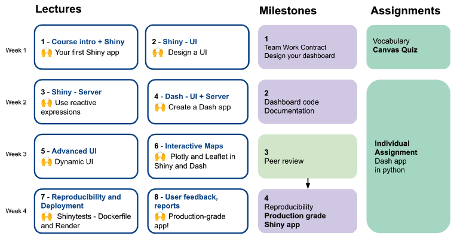
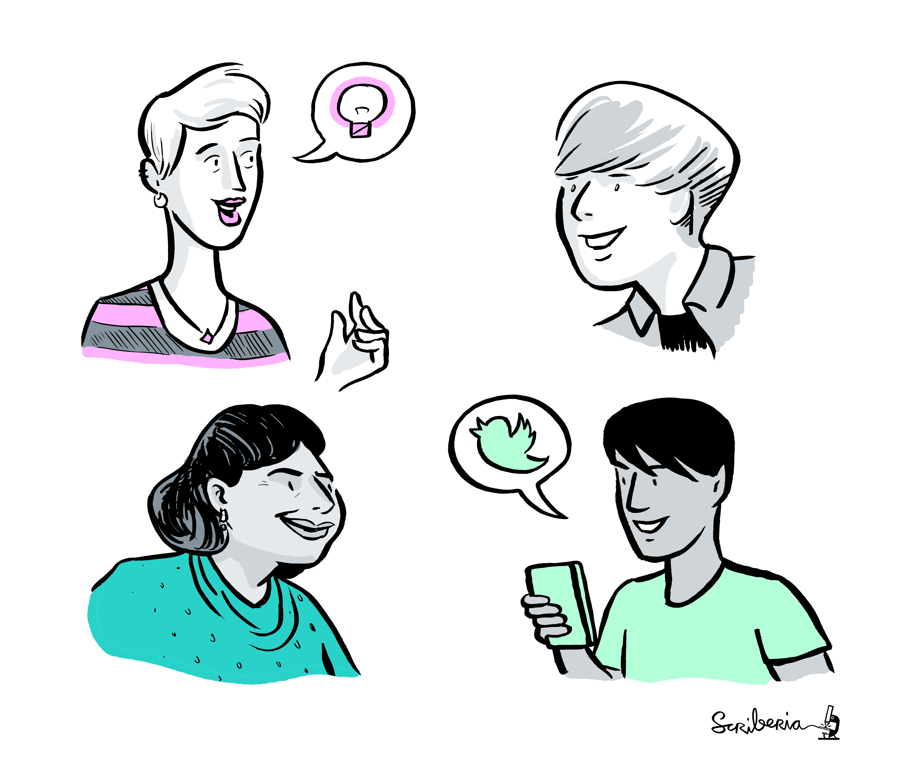
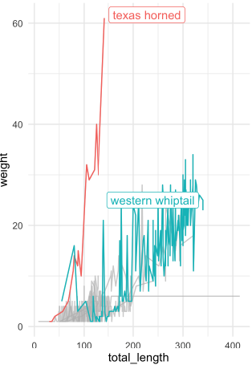
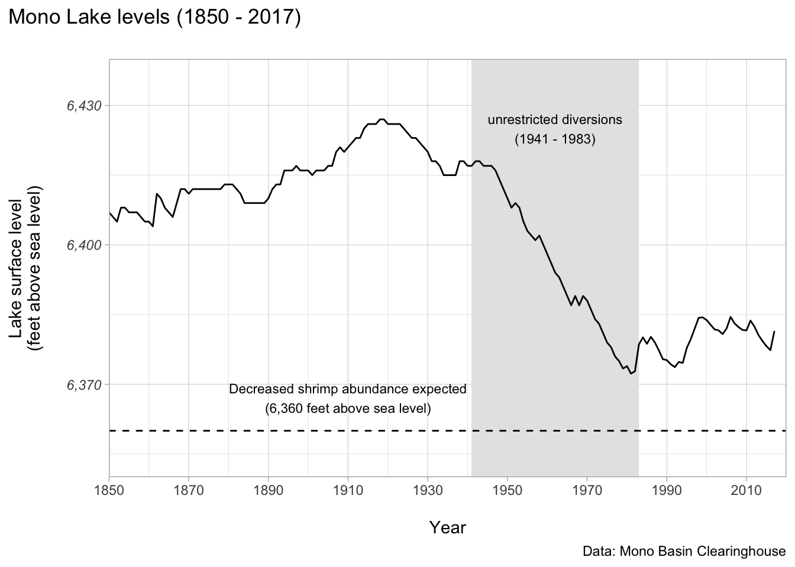
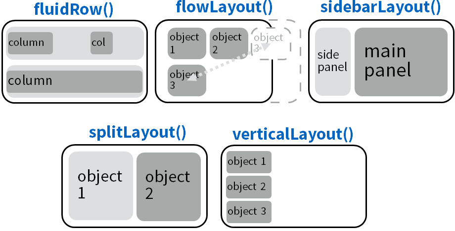

L2 - Design the user Interface
Data Visualization II - DSCI 532 - MDS 2022/23
Lecture 2
- Steps to create a production-grade app
- Why is user center design so important?
- Building your Shiny App UI: Layouts, tabs, navbar.
- How to add themes and style to your Shiny app?
🙌 Design UI references
Engineering Production-Grade Shiny Apps
Chapters:
Fay, C., Rochette, S., Guyader, V., & Girard, C. (2021). Engineering Production-Grade Shiny Apps. Chapman and Hall/CRC.
Today’s goal
Design and build a Shiny app UI
Mastering Shiny
- 📚 Chapter 6 - Layout, themes, HTML
DSCI 532 Overview
1. Steps to create a production-grade app
🛑🤔
What is a “production-grade” app?
These three properties impact two specific groups: users and the developers.
It is used, even if only by one person.
It is relied upon by its user(s).
It has real life impact if something goes wrong.
Extracted from Engineering Production-Grade Shiny Apps book]
The road to a production-grade app
- Motivation and purpose
- Select the results/metrics that you want for your target audience
- Choose presentation method and interactivity
- Description of your app and sketch
- Write the code of the app following a workflow
- Ensure the app’s reproducibility and deploy it
Adapted from: Rasmussen, N. H., Bansal, M., & Chen, C. Y. (2009). Business dashboards: a visual catalog for design and deployment. John Wiley & Sons.
Why is user center design so important?
Develop for your users
- As data scientists, we have the tendency to be focused on the back-end, i.e. the server part of the application
- do not underestimate the necessity for a successful front-end
The road to a production-grade app
- Motivation and purpose
- Select the results/metrics that you want for your target audience
- Choose presentation method and interactivity
- Description of your app and sketch
- Write the code of the app following a workflow
- Ensure the app’s reproducibility and deploy it
Adapted from: Rasmussen, N. H., Bansal, M., & Chen, C. Y. (2009). Business dashboards: a visual catalog for design and deployment. John Wiley & Sons.
Step1. Motivation and purpose
Step 1. Motivation and purpose
A. Get to know well your Persona
B. Understand the the data.
Step 1. Motivation and purpose
A. Get to know well your Persona
A persona is a character that represents the “typical” behavior and traits for a group of users that will interact with your product.

Building personas - Chapter 7 - Engineering Production-Grade Shiny Apps - Image: The Turing Way and Scriberia
Step 1. Motivation and purpose
A. Get to know well your Persona
- While building your application, you can think about how each persona will interact with a given feature:
- Will they use it?
- Will they understand it?
- Do we need to add extra information?
Step 1. Motivation and purpose
A. Get to know well your Persona (target audience)
Human center-design
Develop for your users for humans
What is Human-center design? (Video) Video Spark Works
Step 1. Motivation and purpose
B. Understand the data
- Are there missing values?
- Is there some pre-processing of the data needed?
- What are the variables we are interested to display?

Image: The turing way and Scriberia
Step 1. Motivation and purpose
B. Understand the data
How often the data will be updated?
| Category | Purpose | Update frecquency | Interactivity |
|---|---|---|---|
| Strategic | See and decide or question | Moderate | Low |
| Operational | See and act | High | Moderate |
| Analytical | See and question, explore what-if scenarios | Low | High |
Step 1. Motivation and purpose
Milestone 1 checklist
Proposal.md
Step 2. Select the results/metrics that you want for your target audience
Step 2. Select the results/metrics that you want for your target audience
Example 1: Business dashboard * “Percentage of completion of product”
* “Revenue increase (%) by year”
Example 2: COVID-19 dashboard * “Number of daily COVID-19 cases by country”
* “Percentage of COVID-19 cases”
Based in: Rasmussen, N. H., Bansal, M., & Chen, C. Y. (2009). Business dashboards: a visual catalog for design and deployment. John Wiley & Sons.
Step 3. Choose presentation method and interactivity
Step 3. Choose presentation method and interactivity
A. Components (plots, maps, notifications, text). B. Design dashboard layout.
Step 3. Choose presentation method and interactivity
A. Components
Example 1: Business dashboard * “Percentage of completion of product” -> Plot
- “revenue increase (%) by year” -> Plot
Step 3. Choose presentation method and interactivity
A. Components
Example 2: COVID-19 dashboard
“Number of daily COVID-19 cases by country” -> Map
“Percentage of COVID-19 cases” -> Text box
Step 3. Choose presentation method and interactivity
A. Components
Example 1: Business dashboard * “Percentage of completion of product” -> Plot (could be a text box too!)
- “revenue increase (%) by year” -> Plot (could be a text box too!)
Step 3. Choose presentation method and interactivity
A. Components
Example 2: COVID-19 dashboard
“Number of daily COVID-19 cases by country” -> Map (could be a table too!)
“Percentage of COVID-19 cases” -> Text box (could be part of a plot too!)
Step 3. Choose presentation method and interactivity
A. Components
What library to use to include…? * Plots
* Gauges
* Alerts / Notifications
* Maps
* Text boxes * Reports
Recommendations: - Good moment to check galleries of apps. What can of widgets/libraries are available?
Plots
- Not all the plots should be interactive…
- Interactive plots - the R graph Gallery
- Animation plots - the R graph Gallery
Plots
Threadholds / highlights
Plots
Thresholds / period selection
Maps
“Number of daily COVID cases by province” -> Map -> leaflet library
“Using this library we can add labels that will be revealed when the user interacts with the app…”
Step 3. Choose presentation method and interactivity
B. Desing dashboard layout
- Accessibility
- Fonts and size
- Colors / themes
Step 3. Choose presentation method and interactivity
B. Desing dashboard layout
- Do we need more than one dashboard?
- Are components that can be collapsed / expanded?
- Titles, subtitles, labels
Does the organization has a particular color and layout scheme desired for the dashboards?
Step 4. Description of your app and sketch

App design: Some final messages
Simplicity is gold
UIs should be as self-explanatory as possible
Add labels, titles, notes for the users.
Rule of Least Surprise
Rule of Least Surprise: In interface design, always do the least surprising thing.
The Art of UNIX Programming (Raymond 2003)
–
Rule of Least Surprise
When we are browsing the web, we have a series of pre-conceptions about what things are and what they do.
For example, we expect an underline text to be clickable, so there is a good chance that if you use underlined text in your app, the user will try to click on it.
Questions? Break!
2. How to structure the UI of your Shiny app?
Layouts
- Single page layouts
- Page with sidebar
- Multi-row
- Page with sidebar
- Multi-page layouts
- Tabsets
- Navbars
Layout functions
Shiny Cheat-sheet
Single page layout
Structure of a basic app with a sidebar

Mastering Shiny
Single page layout
The structure underlying a simple multi-row app

Each row is made up of 12 columns and the first argument to column() gives how many of those columns to occupy.
Mastering Shiny
NavbarPage
DEMO: Sidebar, tabs and navbar
3. How to add themes and style to your Shiny app?
Themes
bslib package
Bootstrap
Bootstrap is the world’s most popular frontend framework, providing ready-to-use templates for css and javascript, that save developers time.
What themes are available? Click here!
You can create your own theme!
💡 Use the function bslib::bs_theme_preview() to define your theme interactively
Themes
thematic package
ggplot2 only: You can use thematic package adding thematic_shiny()
library(ggplot2)
library(shiny)
ui <- fluidPage(
theme = bslib::bs_theme(bootswatch = "darkly"),
titlePanel("A themed plot"),
plotOutput("plot"),
)
server <- function(input, output, session) {
thematic::thematic_shiny()
output$plot <- renderPlot({
ggplot(mtcars, aes(wt, mpg)) +
geom_point() +
geom_smooth()
}, res = 96)
}Learning outcomes
Recognize the importance of user center design when developing a dashboard
Implement the six steps to design an app
Build the user interface of a Shiny app using single and multi-page layouts
Customize the Shiny app appearance using bootstrap themes
Design a prototype of an app the user’s needs creating personas profiles
Questions?

UI Design
Don’t Rush into Coding
Prototyping is crucial
Prototyping first may help keep you from investing far too much time for marginal gains.
The Art of UNIX Programming (Raymond 2003) “Rule of Optimization: Prototype before polishing. Get it working before you optimize it.”
–
Boostrap grid system
The Bootstrap grid has twelve columns, and six responsive tiers (allowing you to specify different behaviors on different screen sizes)